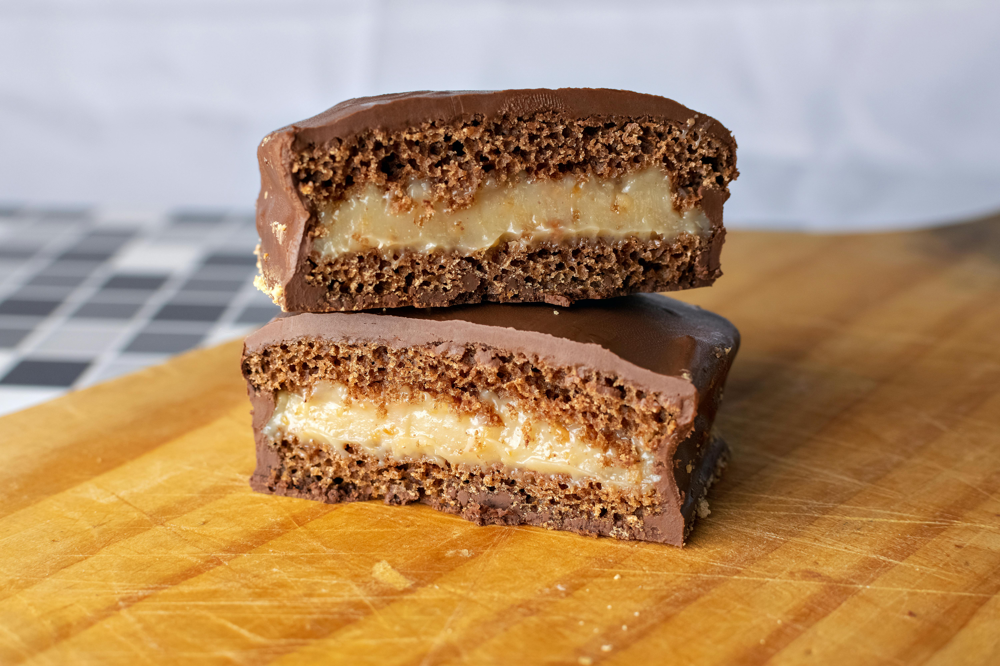
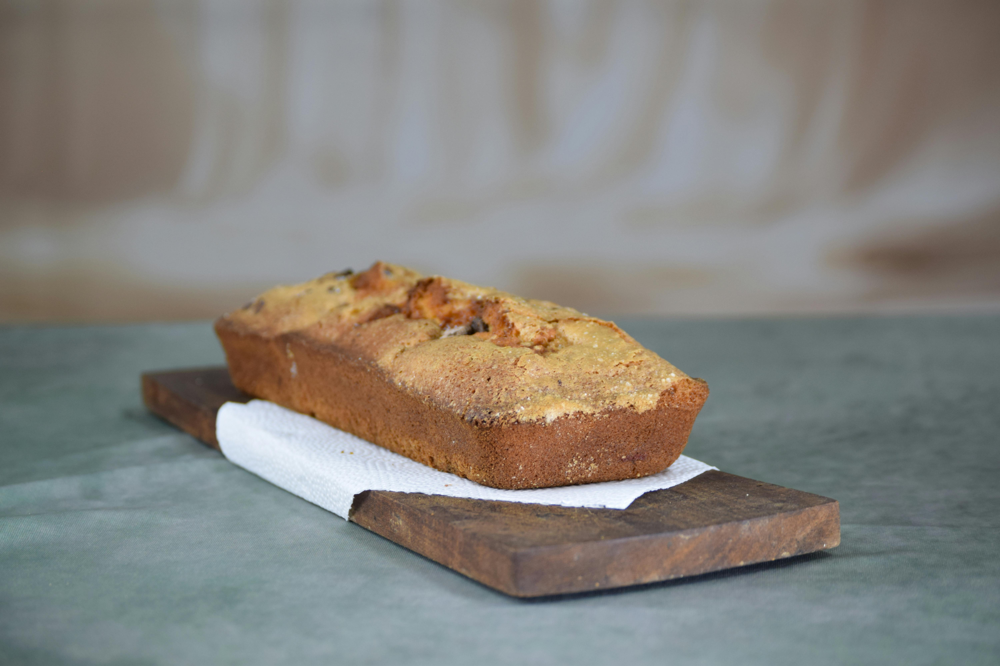
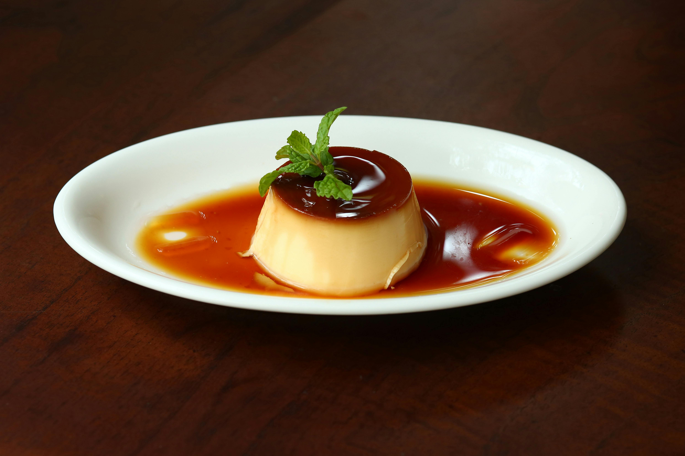
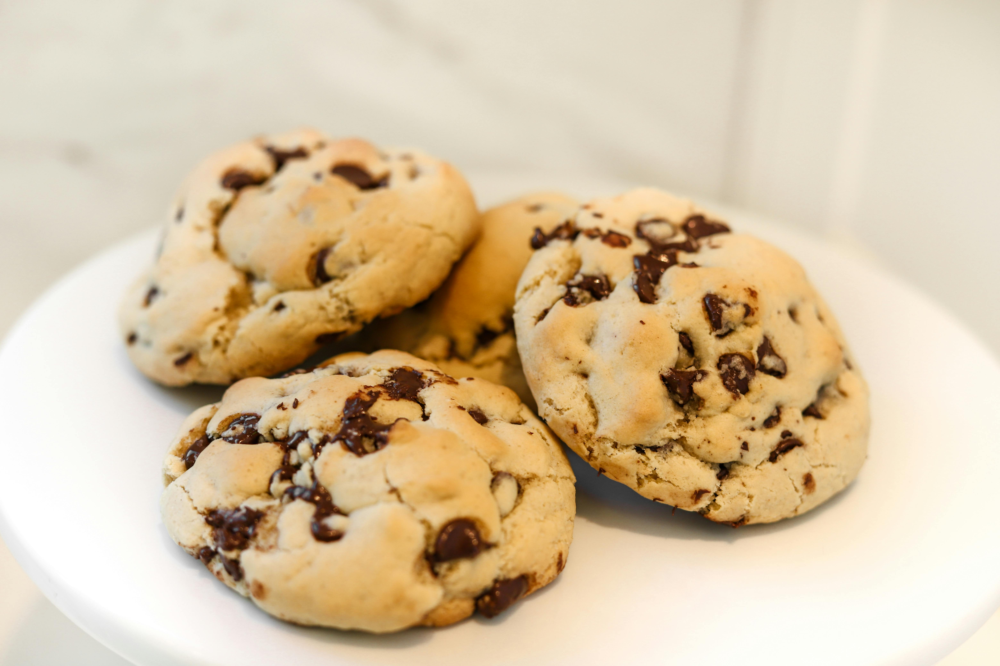
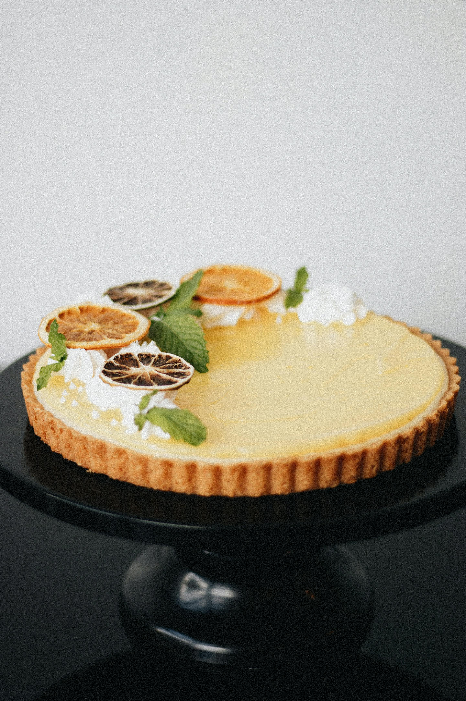
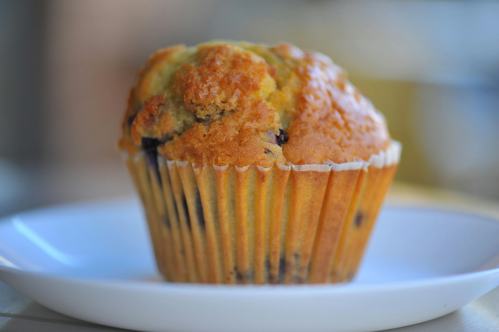
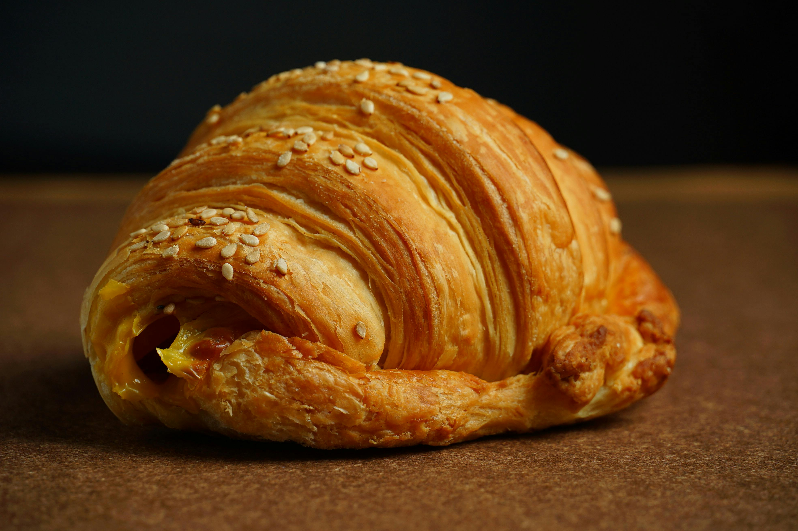
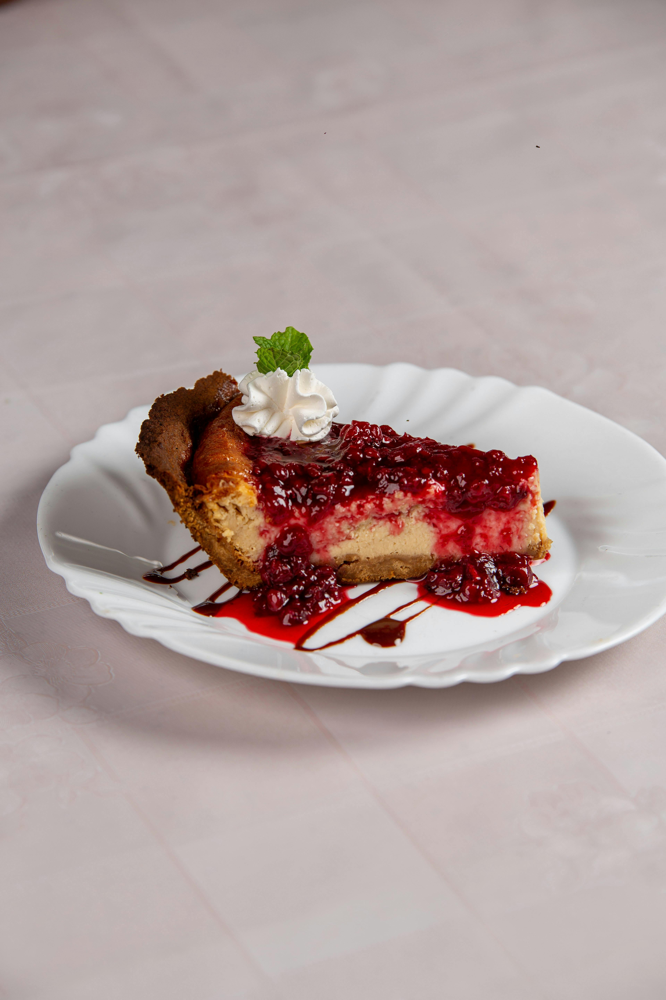

Secretos de Repostería
Encuentra tu próximo desafío pastelero y aprende paso a paso de forma divertida

Alfajores de Dulce de Leche
Aprende a preparar el clásico dulce argentino con masa súper suave de maicena que se derrite en la boca.

Budín Casero de Limón
El secreto para un budín cítrico súper húmedo y esponjoso con un glaseado crujiente ideal para la tarde.

Flan Casero de la Abuela
La receta tradicional infalible con textura cremosa sin agujeritos y el truco para un caramelo dorado perfecto.

Cookies con Chips
Galletas crujientes en los bordes y masticables en el centro, repletas de trozos de chocolate chocolate.

Lemon Pie Tradicional
La combinación sublime de crema ácida de limón, masa quebrada crocante y un merengue italiano perfecto.

Muffins de Vainilla
Receta base súper esponjosa y húmeda, ideal para rellenar con chips, arándanos o dulce de leche.

Medialunas de Manteca
El paso a paso completo para lograr un hojaldrado tierno, aromático y con un almíbar dulce irresistible.

Cheesecake de Frutos Rojos
Exquisito pastel de queso frío, con base crocante de galletas y cubierto de una salsa casera deliciosa.